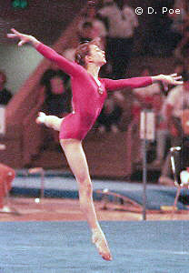

Natalia Kalinina (USSR/UKR)
1990 Goodwill Games AA Champion, 1990 USSR
AA Champion

Medal Total
- World Championships: 1
Gold
- European Championships: 1
Gold, 2 Silver, 1 Bronze
Natalia was born on December 16,
1973 in Kherson. She was coached by Oleg Ostapenko at Dynamo Kherson with
famous teammates Tatiana Lysenko and Elena
Abrashitova. Natalia moved to the USA with her husband; they
coach at Peninsula Gymnastics in northern California.
Competition Results
- 1988
- Junior Friendship Tournament (Druzhba): 1st Team, 5th AA
- Jr. GDR-USSR Dual Meet: 1st Team, 1st AA, 1st B, 1st FX, 2nd
V, 2nd UB
-
- 1989
- Chunichi Cup: 2nd AA
- DTB Cup: 9th AA, 2nd UB, 5th V
- Tokyo Cup: 1st UB
- USA-USSR Dual Meet: 1st Team, 12th AA
- USSR Cup: 3rd AA, 2nd UB
-
- 1990
- American Cup: 2nd AA
- European Championships: 2nd AA, 1st UB, 2nd B,
4th V
- Goodwill Games: 1st Team, 1st AA, 1st B, 1st FX, 2nd V, 2nd
UB
- International Mixed Pairs: 14th Team
- USA-USSR Dual Meet: 1st Team, 10th AA
- USSR Championships: 1st AA
- USSR Cup: 3rd UB, 3rd B, 3rd FX, 5th AA
World Stars: 5th AA, 1st V
-
- 1991
- Blume Memorial: 6th AA
- Moscow News: 2nd AA, 1st B
- USSR Championships: 6th AA
- USSR Spartakiade: 4th AA
USSR-ITA Dual Meet: 1st Team, 7th AA
- World Championships (Indianapolis): 1st Team, 14th AA (prelims)
-
- 1992
- CIS Championships: 5th AA
World Stars: 3rd AA
-
- 1993
- Chunichi Cup: 4th AA, 4th FX, 8th B
- Tokyo Cup: 6th UB, 7th FX
- University Games: 1st Team, 6th AA, 1st V, 1st UB
-
- 1994
- European Championships: 3rd Team, 8th AA
Ukrainian Championships: 1st AA
-
- 1995
- University Games: 4th AA, 3rd FX
-
This page was last updated on July 15, 2000 and was last updated on
September 16, 2005.
© Gymn Forum
-